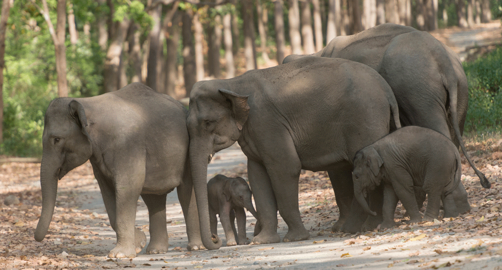

WildLife of Odisha
About
Protected Areas
programs
Feedback
Others
National parks in odihsa
Forest tourist places
Odisha Wild Lifes

The atmosphere of Odisha and circumstances are very much suitable for growth of plants and animals, so here in Odisha many types of wild animals and plants are growing, for the wildlife lovers Odisha is a perfect tourist destination for Wildlife Tour. Most of the Wildlife in Odisha Imagine large tracts of grasslands on the foothills of undulating hills with herds of graceful Spotted Deer’s, Bison’s or Blackbucks ambling around, Muggers basking on sandbars, Dolphins and Flamingos or Skimmers frolicking around, that’s what Odisha with its unique topography offers.With 480 KMs of coastline on eastern side and the Eastern Ghats on the other side together with the meandering rivers crisscrossing the state, creates a medley of landscape ranging from pine forests to wetland, to waterfalls, lakes and mangroves that shelters a wide range of flora & fauna.
With nineteen Wildlife Sanctuaries, one National Park and two Tiger Reserves, the state offers varied experience to its visitors along with a host of activities ranging from trekking, birding, jungle safari and camping in spacious tents in the midst of forest beneath the star lit skies. From the Chilika lagoon which hosts a congregation of million birds to the Mahanadi Gorge of Satkosia, the mountain musings of Similipal or hundreds of Crocodiles basking at Bhitarkanika, a trip to various Ecotourism destinations (Nature Camps) in the allows you to reconnect with nature and is a revelation for your senses. What are you waiting for! Discover the wilderness of India’s best kept secret.
Best of Odisha
Bhitarkanika National Park (Bhitarkanika Nature Camps)
“Mini Amazon” of India and also the 2nd largest mangrove ecosystem in India, only Marine Sanctuary of Odisha and one among the five in India. Hundreds of Saltwater Crocodiles (up to length 23 Ft) can be seen basking on mangrove creeks. A Bird’s Paradise of India with the Largest Heronry.
Chilika Lagoon(Chilika Nature Camps)
Chilika is the largest wintering ground for migratory birds(in Millions) of Indian-subcontinent, only home for Irrawaddy Dolphins in India ,Asia’s largest brackish water lagoon with beautiful Islands, and biodiversity Hotspot of country, Wetland of International importance and a RAMSAR Site. It is 90 KMs from the Capital of Odisha-Bhubaneswar
Similipal Tiger Reserve(Similipal Nature Camps)
A National Park, Biosphere Reserve, Elephant Reserve and Sanctuary of Tiger, Elephant, Sambar, Bison, Spotted Deer, Leopard etc. with small animals and Birds. Specialty is large tracts of Sal Forests with wildlife.
Debrigarh Sanctuary(Debrigarh Nature Camp)
On bank of Hirakud reservoir (largest artificial lake of Asia and longest Earthen Dam of World).Easy sighting of wildlife- Bison, Sambar, Spotted deer, Wild boar, different small mammals and variety of resident & migratory birds.
Satkosia Tiger Reserve(Satkosia Nature Camps & Satkosia Sands Resort)
River Mahanadi (Longest River of Odisha) bifurcates the Tiger Reserve and also forms 22 KMs long Satkosia Gorge (one of the largest and deepest Gorges of Asia).The Tiger Reserve sits on confluence zone of Eastern Ghats and Deccan Plateau. Mugger (crocodiles) and Indian Skimmers basking on sandbars is a common sight. It is the southernmost limit for endangered Gharials in India and the only place in Odisha where both Mugger and Gharials can be sighted.
Rushikulya Rookery(Ganjam)
The Odisha Coast is the largest mass nesting ground for Olive Ridleys in the world .Millions of Olive Radleys nest every year here from October to March.
Daringbadi-Belghar(Phulbani)
Land of Mountains, Tribes, Hills and Valleys.
Chandipur(Balasore)
Rissia-Bichitrapur Nature Camps- Receding Sea of Bay of Bengal(upto few Kilometers) at Chandipur,commonly seen are Red-Crabs in lakhs , terrestrial and migratory Birds. Rissia Nature Camps(Kuldiha Sanctuary) is popular for Bisons and Bichitrapur is for Mangrove forest on Sea Coast. Exclusive Vacations Beach Resorts Chilika, Chandipur, Nuanai(Puri), Bichitrapur, Forest Resorts, Similipal, Bhitarkanika, Satkosia Sands Resort(Badmul), Satkosia Nature Camps, Debrigarh, Chandaka, Daringbadi, Belghar, Mandasaru, Blackbuck Camps, Sanaghagra, Rissia, River Camping, Tikarpada(Satkosia), ,Badmul(Satkosia Sands Resort) ,Lake Resorts ,Chandaka( Deras, Godibari) ,Chilika ,Sand Resorts ,Satkosia Sands Resort(Badmul) Getting There Odisha is well connected with major cities of India and South East Asia.By virtue of its demography, the state comes under the East Coast Railway Division. Also, with Bhubaneswar having a full-fledged International airport, Odisha is directly connected to major cities of India, and internationally with Kuala Lumpur as well as Bangkok. Odisha with its beautiful landscape and well-paved roads provide a delightful experience to bikers, cyclists and car enthusiasts. Also, the state’s road transport has a robust bus service to multiple tourist destinations from major cities.
So, why is Odisha touted as incredible India's Best Kept Secret? What is it about the places, people, landscape, art, culture and history that is so enthralling? What makes Odisha the land of cathartic spiritual experiences, intricate art and immortal architecture regaling timeless tales, beaches, cuisines, landscapes and wildlife? Read through the travelogues, journeys and experiences of many travel enthusiasts who have traversed and fallen in love with the land of Odisha!
Like what you see? Looking to have a well-rounded experience in Odisha? Presenting a list of some curated, pre-packaged tours covering some of the most coveted destinations in Odisha. Browse and see details of the trail/package which interests you the most. Reach out to the Department of Tourism (DoT) recognized travel agents, who are here to provide you with some memorable experiences and moments.
The project is designed and submitted by Mr Surya Kanta Rout